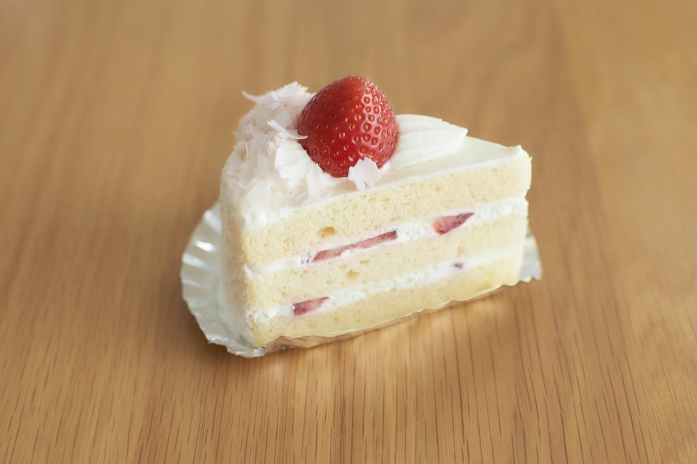
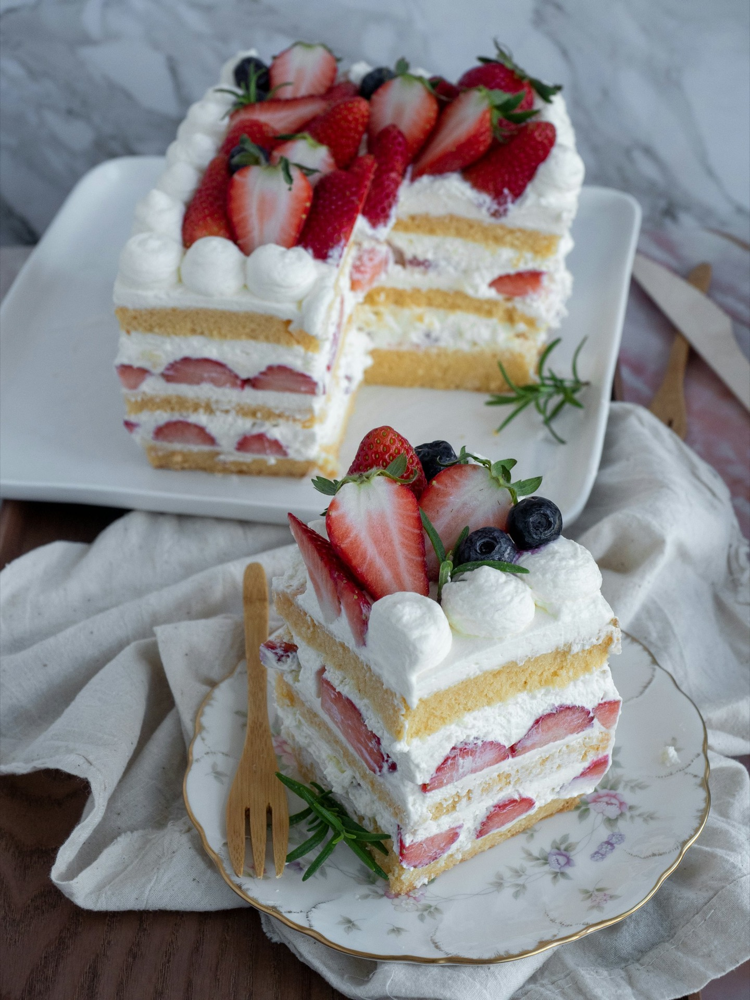
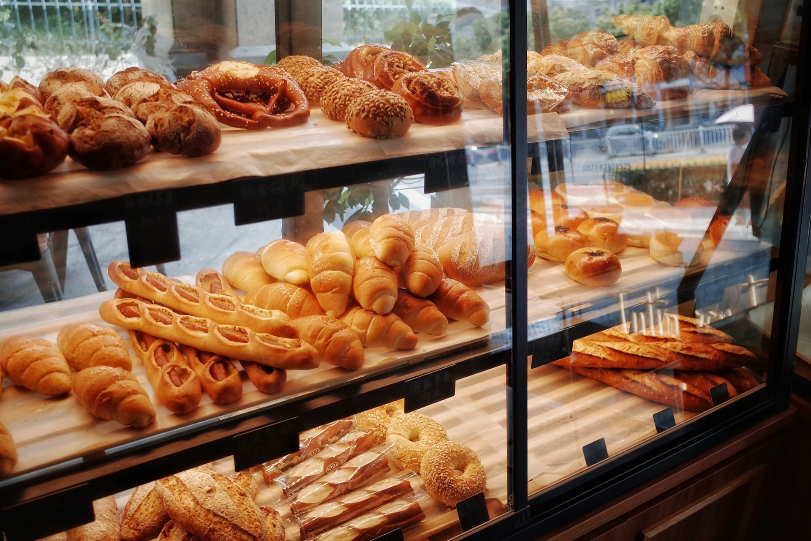

生クリームデコレーション
4号から8号まで。お祝いに。

ケーキ店 東京都八王子市めじろ台
お客様のご要望にお応えするケーキ店です。「八王子を発信していきたい」を理念に、JA八王子や地元の農家さんと協力して、皆様に愛されるお菓子作りを心がけています。
クリスマスケーキ、ご予約受付中
スポンジ
生クリームデコレーション 5号 5,300円（税込）
ケーキの3Dイメージです。実際の商品とは異なります
代表の田中保男は、18歳で自由が丘風月堂で修行し、各地で勉強を重ねて、40歳でパティスリーメゾンを開業しました。
1995年には「TVチャンピオン 洋菓子職人選手権」で準優勝。本当はデザインの勉強をしたかったのに、この世界にとっぷりはまってしまいました。

4号から8号まで。お祝いに。
モンブランロール、くまサンタ、ブッシュ・ド・ノエルなど。
10日前までのご予約で、お作りします。

税込。ご予約はご来店・お電話がおすすめです。価格は現在のホームページの表示をもとにしています。
…
| 営業時間 | 10:00〜19:00 |
|---|---|
| 定休日 | 火曜日・木曜日 |
1日のご予約が8台以上になった場合、お受けできないことがあります。お早めにどうぞ。